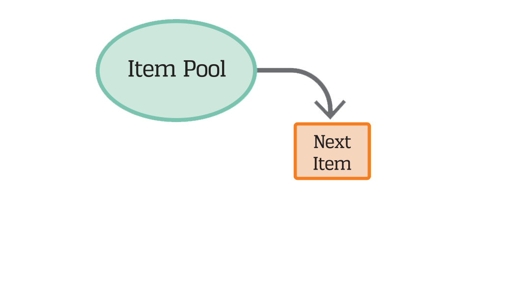
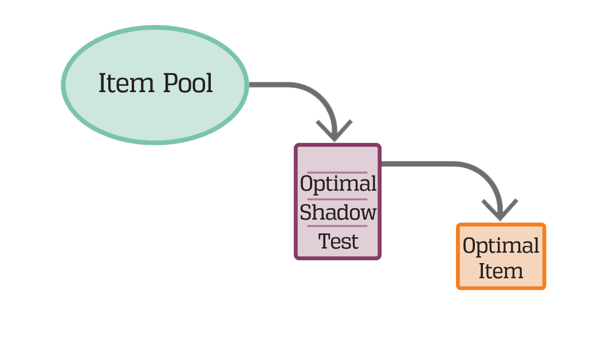

ShadowCAT is the most adaptive, most efficient, most precise way to assess your students, and ensures all test requirements are met in every test administered.
Introducing ShadowCAT
Computer adaptive testing revolutionized assessment in K–12 schools by giving schools a more precise, individualized, and efficient way to measure student achievement and growth over time. By adjusting the difficulty of questions based on the student’s responses, adaptive tests provided a better test-taking experience and more accurate scores across the achievement continuum. However, until now, there has been a lack of assurance, or guarantee, that these tests perform with measurement precision.
CTB/McGraw-Hill’s ShadowCAT™ takes CAT to the next level. ShadowCAT makes CTB the only K–12 provider to successfully use shadow testing techniques to optimize the computer adaptive testing experience—more valid and reliable, more flexible and configurable.
The ShadowCAT Difference
ShadowCAT moves the “shadow test” concept from theory into practice. CTB’s flagship CAT engine, built on the Optimal Test Design (OTD) framework, ShadowCAT anticipates the items needed to meet all requirements of the test, and builds a complete and optimal test form for the student at every adaptive decision point. From that fully compliant form, the item that will provide the most information about the student’s ability is presented to the student. These test forms remain hidden from the test taker, hence the name “shadow test.” The student sees only the items that are selected and administered– yet the shadow test ensures that items are available to meet all subsequent requirements of the test.
| Traditional Computer Adaptive Testing | Using the ShadowCAT Engine | |
| On a typical computer adaptive test, a student who correctly answers a question will receive a more difficult item, while an incorrect answer will generate an easier item. CAT anticipates what individual item a student needs at a specific point in time. Once the item is administered, the student’s ability estimate is updated, and the next item is selected. | Rather than selecting a single item at a time, ShadowCAT looks ahead and constructs a complete test—and then selects the optimal item from that fully compliant test. Once the item is administered, the student’s ability estimate is updated, and the shadow test is reassembled to be optimal. |
| 1. | The pool of available items is searched and the optimal item is chosen, based on the student’s ability estimate. | 1. | The pool of available items is searched and the shadow test is constructed, based on the students’ ability estimate and the full set of testing requirements for the adaptive test. | |
| 2. | The chosen item is presented to the student, who then answers it correctly or incorrectly. | 2. | The chosen item from the shadow test is presented to the student, who then answers it correctly or incorrectly. | |
| 3. | The student’s ability estimate is updated, based upon all prior answers. | 3. | The student’s ability estimate is updated, based upon all prior answers. | |
| 4. | Steps 1–3 are repeated until a termination criterion is met. | 4. | Steps 1–3 are repeated until a termination criterion is met. | |
|  |  |
Benefits of ShadowCAT
Provides maximum information for high precision
Each test constructed with the ShadowCAT engine automatically optimizes the selection of items to maximize information throughout a student’s testing experience.
Guarantees compliance with test blueprints and psychometric requirements
ShadowCAT guarantees that the test will adhere to all test requirements for every test taker. No other adaptive algorithm can make that guarantee. Unlike typical CAT solutions which consider only one item at a time, the ShadowCAT engine evaluates the test selection against all requirements simultaneously, preventing an item selection that may meet a requirement early in the test, yet rob the pool of available items for a later requirement; also, ShadowCAT prevents the test from concluding before all testing requirements, or constraints, are met.
Offers flexible and configurable delivery options
The ShadowCAT engine supports four adaptive delivery approaches for the same set of test requirements and blueprints, including:
Computer Adaptive Testing (CAT) – fully individualized and adaptive at item level, highest precision given test length, shortest test given precision, real time expose control, navigation forward limited. adapting the test at the conclusion of each item, based on the response
Multi-stage on the fly (MSOFT) – Both MST + LOFT, modules are created on the fly for further optimization, allowing for a higher measurement precision with real time exposure control, navigation within stages permitted. adapting the test at specified locations in the test, with the selection of items to be administered between adaptation points generated during the test experience
Multi-Stage Testing (MST) – adaptive after each stage with a higher measurement precision than LOFT and blueprint review prior to test administration; navigation within stages is permitted. adapting the test at specified locations in the test, with the selection of items to be administered between adaptation points generated prior to test administration
Linear on the Fly (LOFT) – All test items are selected at start of test, based on prior test performance, to create the optimal test form; allows navigation back and forth and the ability to change responses during the test. adapting the test only to the student’s starting ability level, and selecting an optimal test form for that student to be administered in a linear fashion
Linear tests – generating a fixed optimal test form to be administered to all students taking the test. Optimization in this instance typically maximizes information at cut scores.
Offers high scalability for states, districts, and schools
ShadowCAT can be used to deploy computer adaptive assessments to one student, or many—meeting and exceeding our customer’s expectations in terms of scalability and performance.